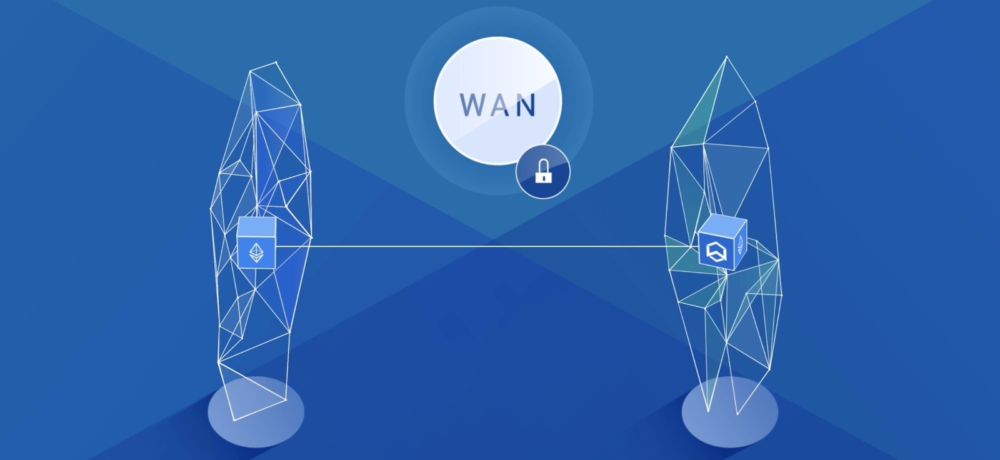

An Overview of the Wanchain Cross-Chain Implementation Model

Introduction to Cross-chain
With the rapid rise of blockchain technology, there are now thousands of public and private blockchains and blockchain platforms being used across the globe. However, these blockchains exist largely in isolation, unable to exchange information or value with one another. This severely limits their world-shaping potential. The purpose of a cross-chain solution is to connect different blockchains, like a bridge between islands. These connections will provide innumerable benefits, including enabling the near-instant and automated exchange of information and value across platforms, enhancing liquidity in the market and providing a distributed clearing mechanism.
The Technical Problems
At present, there is no universally accepted cross-chain mechanism due to two difficult-to-overcome technical roadblocks that any viable cross-chain solution must solve for. The first is ensuring that the total number of tokens on the original blockchain do not decrease or increase following a cross-chain transaction - also known as the law of value conservation. We'll call this Problem Alpha.
As an example, when transferring value from Ethereum to Wanchain, you must ensure that the value that is transferred to the Wanchain blockchain is no longer accessible on the Ethereum blockchain - otherwise, a user could create use the same finite amount of Ethereum to unlock unlimited new value on Wanchain. At the same time, you cannot destroy the Ethereum being transferred, as Ethereum is a limited and exhaustible resource. Destroying the transferred Ethereum would prevent two-way transactions, as Wanchain would be unable to generate new Ethereum tokens when the tokens need to cross back to the Ethereum blockchain.
As a result, when a cross-chain transaction is executed, the value that is made available on the destination chain must simultaneously be made unavailable, but not destroyed, on the original chain.
The second roadblock is finding a way to verify a cross-chain transaction on the blockchain on which it was initiated, in a trustless manner. We'll call this problem Beta.
This issue arises when developing any solution to Problem Alpha. As we've just established, when a cross-chain transaction is executed, the value that is made available on the destination chain must be simultaneously made unavailable on the original chain. For this to be executed properly, however, the original chain must receive immutable, trustless verification that the desired value has been made available to the recipient on the destination chain, before making that same value unavailable on the original chain.
As an example, if a user initiates a cross-chain transaction from Ethereum to Wanchain, and the value is made unavailable on Ethereum before there is definitive verification that the corresponding value has been made available on Wanchain, the user would have no access to either his original Ethereum or the corresponding value that was supposed to be made available on Wanchain - effectively losing their funds for good. This issue is difficult to solve for, because different blockchains have different protocols for verifying transactions. As a result, it is difficult for any one blockchain to directly read another blockchain and determine if a transaction has been verified, unless those blockchains have been intentionally developed to be compatible.
Wanchain's Solutions
To solve for Problem Alpha and ensure that the total number of tokens on each blockchain remains static when being transferred from one chain to the next, Wanchain's specialized nodes - also known as Storemen - employ an innovative, secure, multi party computation method with a threshold-protected secret key to process cross-chain transactions.
For every cross-chain transaction, Wanchain's Storemen nodes create a locked account that holds the funds being sent from the original blockchain indefinitely, while an equivalent value is made available on the destination blockchain in the form of a corresponding mapping token. The original funds can then only be released when the value of the corresponding mapping tokens is sent back to the original chain, and the mapping tokens themselves are destroyed.
For example, when executing a transaction from Ethereum to Wanchain, the funds being sent from the Ethereum chain will be held in a locked account, while a corresponding amount WETH - Wanchain's Ethereum mapping token - will be made available to the recipient. The locked Ethereum is only made available again when the recipient of the WETH sends that WETH to an Ethereum account. At that point, the WETH is destroyed and the locked Ethereum is released to the target Ethereum account.
When any cross-chain transaction is initiated, the owners of each Storeman node must jointly participate in the generation of the related locked account's public and private keys. The shared account's private key is not actually a static string of numbers and letters, but a series of key fragments that is scattered amongst the account participants present at the time the private key is generated.
In order to release funds from these locked accounts, the operators of a Storemen node must jointly agree to do so by contributing their respective pieces of the node's private key to generate a signature. This is the secure multiparty computation piece of the transaction processing procedure, and it prevents any one bad Storeman actor from being able to carry out a double spend attack by unlocking tokens being held in any locked account generated from a cross-chain transaction.
In order to guarantee that a transaction can be executed at any given time, it is not necessary for all participants to fully engage in the process of releasing funds from a locked account - instead, the number Storemen account participants must be above a set threshold (M out of N participants, M<=N). This is the threshold key-sharing piece of Wanchain's solution. This solution ensures that, for the funds in a locked account to be wrongfully released, a very high percentage of Storemen must agree to collaborate as bad actors. In conjunction with the significant economic incentives to not act in bad faith, this system projects to be an extremely effective system from deterring fraudulent behavior.
To solve for Problem Beta, verifying transactions on the original blockchain in a trustless manner, Wanchain eventually plans to implement a new third-party consensus mechanism called The Voucher. The Voucher will be a consensus group that is economically incentivized to verify the finality of the transactions sent to the destination chain on the original chain.
To ensure Wanchain is viable as a cross-chain solution while the Wanchain team works towards perfecting the implementation of the more elegant and dynamic Voucher mechanism, the system outlined above is executed using atomic swaps - circumventing the need for cross-chain verification. When ETH is transferred across Wanchain as WETH, a user is essentially exchanging their ETH for WETH in an atomic swap, where the other parties are the Storeman nodes. While atomic swaps are not the most scalable or efficient solution, they are a reliable and effective means of transferring value across chains that will allow Wanchain to be an immediately functional cross-chain platform.